「聳ゆるマスト」阪口喜一郎の顕彰記念碑建立運動
1、「不屈」広島県中部版 09年4月 NO-1
「聳ゆるマスト」記念碑建設のための呼びかけ人会議が、四月五日に、呉市で開かれました。
上田博則・同盟呉支部長（県副会長）の報告をはじめ、大阪・和泉市、津和野町、御調町からも参加があり、全体では十五名で、今年末の「阪口喜一郎碑前祭」にむけての取組みの方向が確認されました。
会議後、呉市の喜一郎「ゆかりの地」を、同盟・呉支部顧問の小栗勉さん案内で訪ねました。
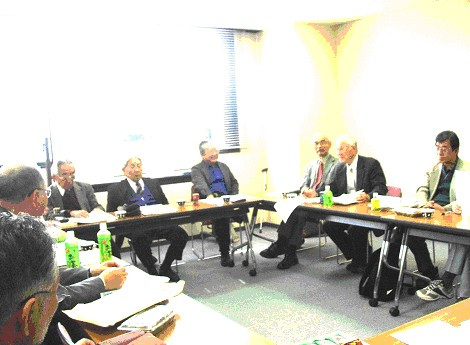
呉市ビューポートで開かれた「よびかけ人会議」
正面左から、柳河瀬、上田、小栗、山田、岩崎、奥田さん。
全国的な「よびかけ人」に、同盟大阪府本部・柳河瀬精会長（中央副会長）、広島県本部・山田慶昭会長、古久保暢男・元大教組委員長などが参加されることが確認されました。
治安維持法犠牲者国家賠償要求同盟 機関紙「不屈」広島県版の紹介
（不屈 広島県版 2010.12.15. NO.438)
「聳ゆるマスト」反戦兵士に学び、
いま、平和日本への道に力を尽くそう
2009年 第20回 県本部総会 議案 （抜粋）
・聳ゆるマスト顕彰碑建設事業
呉市有志を中心とした「『聳ゆるマスト』顕彰碑建設実行委員会」が０７年６月に発足、
その後体制を拡充整備しつつ建設準備が活発に進められてきました。
同盟呉支部はその中で重要な役割を果たしてきました。
実行委員会は、昭和の初め天皇制軍隊の中で、厳しい弾圧迫害にもひるまず、
海軍兵士の間で、平和と人権擁護の尊い活動に命を賭して取り組んだ「聳ゆるマスト」発刊関係者の闘いを顕彰し、
現在の軍国主義復活の潮流への警鐘とすることを願っています。
同建設実行委員会は、事績調査、ＤＶＤの作成・普及、建設用地確保、資金獲得などの計画に沿って、０９年１２月完成を目途に事業を進めています。
治安維持同盟県本部は中央本部とともにこの事業に全面的に協力してきました。
０８年１２月１３日には、［聳ゆるマスト」創刊号の発刊責任者である阪口喜一郎の出身地大阪府和泉市黒鳥町で、
彼の没後７５周年を記念する祭典が挙行され、広島県からはバスー台で４０余名が参加しました。
実行委員会は、当面０９年１２月２７日の阪口喜一郎没後７６周年記念日にむけて顕彰碑建立を急いでいます。
事業宣伝のビデオ、ＤＶＤの作成と普及、資金集めが進められており、同盟県本部も責任を果たすべく努めています。
「聳ゆるマスト」碑建設
小栗 勉
戦前の日本帝国海軍の一大拠点であった呉軍港で、一九三二年、兵士向けの反戦新聞「聳ゆるマスト」が四号発行された。
これにかかわった人たちを顕彰しようという運動が三年前から始まりました。
なぜか？四年前「戦艦大和ミュージアム」 （入場料五〇〇円）がつくられ、
今年七月で入場者は四〇〇万人を突破。この盛況ぶりに目をつけた海上自衛隊が、
その隣に退役した潜水艦を展示、クジラ館と称して無料で一般公開。
呉港からはペルシヤ湾などに海上自衛隊がどんどん海外派兵されている。
平和教育に供するためも、反戦兵士にかかわった民間の党員・支持者をふくめて
三〇人近い人たちが今なお、地下に埋もれたままになっています。
だからこそいま、顕彰することに大いなる意義があると考えています。
【2009年 不屈 NO.425 治安維持法犠牲者国家賠償要求同盟 第34回全国大会発言】
第９回県本部理事会報告
４月５日呉市で「聳ゆるマスト顕彰碑」建設実行委員会拡充のための会議が聞かれた。林紀子、柳河瀬精、山崎清人、山田慶昭などの５氏が新たに建設委員会に加わった。
建設用地の見通しがほぼ立ち、１０００万円の事業費で顕彰碑建立までの第一段階の事業を連々かに進める。
資料館建設は第２段階としてその後取り組む。
阪口喜一郎の出身地大阪の府同盟は、「聳ゆるマスト」ＤＶＤをすでに同盟会員２０００余名全員に届け、顕彰事業への協力、募金を訴えている。
島根、山口の両県同盟もすでに積極的に取り組んでおり、広島県の動きは遅れている。
ＤＶＤの普及、募金活動を急いで進めたい。
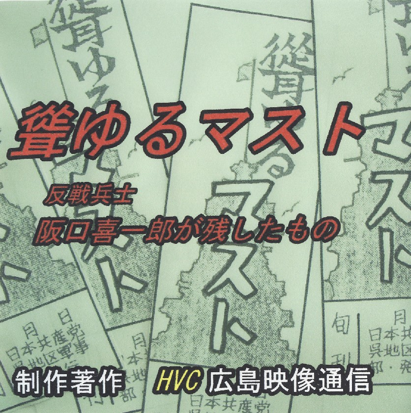
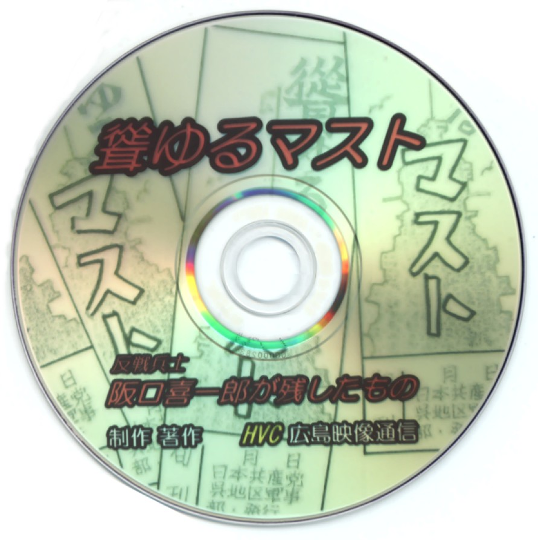
協力呼びかけを進める。
同盟島根、山口各県本部ではすでに全会員宛に「聳ゆるマスト」ＤＶＤの送付、募金の訴えが進められている。
大阪府同盟からはすでに募金も１００万円以上寄せられているとのこと。
日程を決めて、５月中に団体、個人有志への訪問、また同盟会員宛募金の訴え、ＤＶＤの頒布協力の要請をすませる。
役員は先頭に立って活動していただきたい。
④史跡探訪
今回別項案内「バスツアー募集」のように史跡見学会を計画しました。
有意義な催しとなるよう、地元の皆さんのご協力もお願いしています。
誘い合わせて、多数のご参加を頂きますよう期待しています。
バスツアー募集
『聳ゆるマスト』兵士達のゆかりの地を訪ね
海上自衛隊基地の現状を見て
明日の日本を考えてみませんか
『聳ゆるマスト顕彰碑』を、呉湾が見下ろせる高台に建立しようという話が進められています。
一方、呉の港では、自衛艦の増強が年々進められ、中東方面への派遣も恒常化しつつある有様です。
また、「大和ミュージアム」や「鉄のくじら館」が市民の懐古的軍国主義を煽っています。
かつての反戦兵士達の闘いは、過去のものではないような思いに駆られます。
日 時 ６月６日（土）午前９時 広島駅新幹線口集合
同 午後５時 同 解散
説明者 小栗勉氏
参加費 ３０００円
（呉市からの参加者は別計算）
定 員 ２５名
申込み 同盟県本部 片桐隆三まで
０８２・２８２・００１８
「不屈」広島県版 No.187 2009.5.15. 所載より転載
喜一郎の妻 野村ウメコの姪から
阪口喜一郎御前祭へのメッセージ
藤井 晴子
住吉（野村）ウメコの姪藤井晴子です
この度は碑前祭にお招きを頂きましたが、何分九十九歳を目前にした母（野村ウメコの妹）を
置いて家を留守に出来ませんので、手紙で失礼させて頂きます。
伯母ウメコより阪口喜一郎さんの思い出は何故だか聞いておりませんが、母からは以前度々聞いておりました。
呉の阪口（喜一郎）さんの家へ時々遊びに行ったがとてもやさしくおとなしい人柄だったとか・・・。
広島の刑務所で御自分の意志を曲げずハンガーストライキをして獄死され、
父親（ウメコの父）が御遺体を引き取りに大八車を引いて刑務所へ行ったら係の人から
「阪口さんのように意志の強い人は今までに見た事がない」と言われたそうです。
あの時代に反戦平和の為に御自分の信念を貫かれた阪口さんを、私の生まれる前の事とは言え、
多少なりともご縁がある事を誇りに思います。
伯母ウメコはと言えば、子供に恵まれなかった為、私を娘のように可愛がってくれました。
御調郡で婦人会長を長年させて頂き、少しでも人様のお役に立つ事をしなければと張り切っていました。
晩年は私のそばの病院に来てもらい、最期を迎える時は少しでも人様のお役に立つようにと
広島大学の白菊会へ献体をして亡くなりました。
こういう伯母の精神は阪口さんの思いと通じていたのではないかと思っております。
私も二人の意志に少しでも近づくように日々精進して行っております。
（以上）
なお碑前祭当日、藤井晴子さんからのつぎの手紙が披露されました。
「私達夫婦は、東広島市に住んでいますが、近くの花谷家の過去帳に、野村梅子さんの手で、
阪口喜一郎さんが、『誓生院法修道徳信士』の戒名で弔われています。
和泉市のみなさんにその事をお伝えし、ご報告といたします。ありがとうございました」
阪口喜一郎の碑前祭に参加して
１２月６日 堀 チズコ
１０月の国賠本部の主催する韓国平和と連帯の旅に参加をして、国賠同盟に加入しました。
二階堂さんに誘われて阪口喜一郎の碑前祭に参加し、思いがけなく、私と東広島市原水協理事の山口さんの二人が、
参加者で一杯の交流会で発言することになりました。
式典では、高田俊さん、小栗勉さんの挨拶には感動し、故野村ウメコの姪、安佐南区の藤井晴子さんの手紙が
紹介されましたが、初めて問くことばかりで、今は、治安維持法で不合理な罪に問われた人、
その関係者の名誉回復をどうしても国にしてほしいと思います。
私は共産党を応援していて党員にはなっていませんが、和泉市長の．メッセージの紹介、地元町内会長さんの挨拶には、
大阪の共産党と地域の深い結びつきを感じ、驚きました。
交流会では、教育委員会の方が戦争に反対した和泉市の歴史を講演され、閉会の挨拶は、市職員労働組合の若い委員長がされて、
びっくりしました。
私は、西広島ペンクラブの役員をしていて、ドラマの脚本も書きます。
最近、日本人の移民問題をとりあげた「ハワイ、小林旅館」の本を出版しましたがその反響に驚いています。
夫は、１９３２年に日本人として朝鮮で初めて治安維持法違反で逮捕され、投獄された上甲米太郎の妻、とし子が
生母となるために、少し勉強していますが、結局、国賠の運動に首をつっこむことになりました。
五日市にある故野村ウメコさんのお墓を小栗さんの案内で訪れて、菊の花と線香で弔ったこと、
奈良で小林多喜ニが泊まった旧志賀直哉宅が今もあること、宇治市の山本宣治さんのお墓に夕刻訪れたことなど、
私にとって忘れることのできない阪口喜一郎碑前祭参加の旅でした。
実家が蒲刈町のために、今、朝鮮通信使の研究会にも参加し、朝鮮と日本の問題に取り組んでいます。
京都の日赤の看護学校を出た女性と、薬科大を出た朝鮮の男性が結ばれることもなく、特攻隊になることを強いられ、
命を失った悲劇を小説で書き残そうと思っています。
９０歳を迎えられ元気で碑前祭に参加される片桐さんの姿を見て、私も、もう一仕事したい気持ちになっています。
国賠同盟のみなさん、よろしくお願いします。
１２月６日
松本清張と阪口喜一郎について
理事 二階堂 洋史
１２月に入り、来春３月まで東広島市の志和公民館を会場に、「松本清張展」が行われています。
松本清張の実母、岡田夕二さんが志和町の出身で、広島市で紡績女工をしていたときに知り合った
夫松本陣太郎の間で、最初に広島市で生まれたのが清張です。
（本籍地は福岡・小倉になっていますが、清張自身がその事を明らかにしています）
その掘り起こしを兼ねて志和公民館が主催した催しもので、１５０点余りの清張ゆかりの展示物を自由に見ることができます。
清張は「昭和史発掘」の作品のなかで、
１９６６年に「スパイＭの謀略」として、戦前の日本共産党を「恐ろしい団体」と国民に広げるために仕組まれた
大森銀行ギャング事件、熱海事件などが、当時の特高の指示の下に引き起こされた事実を明らかにしています。
スパイＭは、松村昇など幾つかの名前を使い分けていましたが、本名は飯塚盈延と戦後判明し、
本籍地のない男として１９６５年に亡くなっています。
スパイＭは、共産党中央軍事部の担当も一時しており、阪口喜一郎が呉から上京した時の扱いで苦労し、
新たな任務につくことを妨害した問題の張本人であり、１９３２年秋の熱海事件で党の中国地方オルグの錦織音七が
検挙され、「聳ゆるマスト」５，６号発行の関係者が検挙されたことで、特高の指示の下にスパイＭが重要な役割を
負っていたことはこれまでに明らかにされています。
松本清張は、１９２９年３月、福岡で印刷屋に勤めていた２０歳の時に、治安維持法違反で検挙された
苦い経験をもっていますが、その作品のなかで、当時の支配層の弾圧の内容をあばき、
激しく世に問うことに情熱を注いだ一生をおくりました。
昨年、生誕１００年の諸行事が全国でおこなわれています。
清張のゆかりの地、志和町に、野村ウメコの手で、治安維持法で弾圧を受け、１９３３年１２月に獄死した
阪口喜一郎が弔われていることを知り、改めて歴史の掘り起こしを進めてゆくことの大事さを感じています。
阪口喜一郎の妻野村ウメコさんは、松本清張と同じ年に生まれています。
山岸一章の本「聳ゆるマスト」が発行され、夫のだたかいの全容を知ったのは喜一郎没後５０年の前年１９８１年のことでした。
１９８３年の喜一郎の神前祭に参加したウメコさんが、喜一郎を知る妹、幸子さんの嫁ぎ先の志和の花谷家の
過去帳に喜一郎を入れるのにこだわったことを、読書家であったウメコさんに聞きたいとも思いますが、
もうそれもできなくなっています。
上甲米太郎の妻、稔子について
理事 二階堂 洋史
上甲米太郎（じょうこう・よねたろう）は１９０２年４月１６日に愛媛県に生まれましたが、両親が朝鮮にわたり
郵便局長をしていたために、大洲中学校（愛媛県）卒業後は京城高校・教員養成所に進みました。
赴任した朝鮮慶尚南道昆明（コンミョン）公立普通学校の校長をしていた１９３２年１２月、３０歳の時に、
プロレタリア教育運動、社研活動で、日本人として初めて朝鮮での治安維持法違反とされ、
懲役２年の判決をうけて獄中につながれました。
戦前、戦後を生きぬき、朝鮮と日本の民主主義的変革に生涯をささげ、１９８７年３月２１日に東京八王子市で
家族に看取られ、永眠されました。
その業績をたたえて、上甲米太郎の顕彰碑は、郷里八幡浜市の上甲家の墓所の一角に近く建立される予定です。
広島と縁があるのは、米太郎を生涯ささえた妻、稔子（としこ）さんが、若いときに広島市の観音にいたことがあり、
前夫との子息、堀一三さんが廿日市市上平良でご健在なことです。
実妹となる東京調布市に住む上甲真知子（青年劇場女優）さんと共に、八幡浜市の上甲家の墓参に行かれ、
上甲米本郎夫婦の弔いをされておられます。
上甲米太郎の妻、稔子さんは、広島での堀さんの生活に終止符をうち離婚、１９３６年に米太郎と結婚（再婚）します。
米太郎の前妻の子息、伊利一さんを育てながら、米太郎との子、真知子、壮二さんを生み、
朝鮮、北海道釧路市、九州・大牟田市、東京・八王子市の地で、米太郎との生活をささえ、
２００５年に自動車事故で永眠されました。
上甲夫婦は九州筑豊地方で過ごした時期が一番長いのですが、三池炭坑の闘争でともにたたかった荒木栄から、
上甲米太郎の母に、「わが母の歌」を贈られた党創立４０周年（１９６０年）筑豊地方での記念集会の記録が残されています。
堀一三（ほりかずそう）さんは、２歳のときに実母と別れ、広島・観音の堀家の長男として実父、養母のもとで育ちました。
広島市西区の観音で被爆し、今、その語り部として活動されています。
一三が実母稔子と米太郎の生涯を知るのは、今から１０年前に、義兄伊利一、妹真知子、弟壮二さんから
初めて実母についての連絡をうけてからのことでした。
「実母稔子の人生を知り、心から弔いをしています」と、今、その気持ちを静かに語っておられます。
上甲米太郎の顕彰碑建立の準備がすすみ、その中で、戦前、戦後の大変な時期に、
米太郎をささえた妻、稔子さんの生涯も明らかにされてきています。
広島に縁があり、その子息一三さんが、原爆をのりこえて元気に活動されているのは最近わかったことです。
掘一三さんの妻チズ子さんは西広島ペンクラブの役員をされていますが、治安維持法犠牲者国賠同盟に加入され、
近く、書き物にまとめておきたいとのことで、侵略戦争、暗黒の時代に、治安維持法とたたかった先人の方々の生涯が、
次世代に残す歴史の教訓として受けとめたいと思っています。
「聳ゆるマスト」の活動の発掘をすすめる中で、阪口喜一郎と同じ年に生まれ、同じ時期に朝鮮で治安維持法の
弾圧をうけてたたかった上甲米太郎の業績には深く感動を覚えました。
２０１０年１０月に、国賠同盟本部のツアーで訪れた韓国の延引小学校の学籍簿には、「昭和７年学校長 上甲米太郎」と
記載されていましたが、７０数年の歳月を経た今日、朝鮮侵略に反対した日本人教育者がいたことを伝えることは
大事になっていると思います。
編集部より
上甲米太郎については、「治安維持法と現代」誌の最新号（No.２０）２０１０年秋季号のつぎの二つの文章で詳しく紹介されています。
朝鮮植民地支配に対する日韓人民のだたかい
同盟本部副会長 増本 一彦
２７頁
「朝鮮教育令にもとずく教育に抵抗した
日本人教育者たちのうち、上甲米太郎を中心にした
新興教育運動の例をご紹介します。・・・
１３２頁～１３５頁
反植民地教育運動家・在朝鮮日本人教師
「上甲米太郎先生顕彰碑」の建設募金はじまる
同盟愛媛県沸部
以上 「不屈 広島県版 2010.12.15. NO.438」
ＤＶＤ『聳ゆるマスト』制作の記
ケース表紙
DVDタイトル
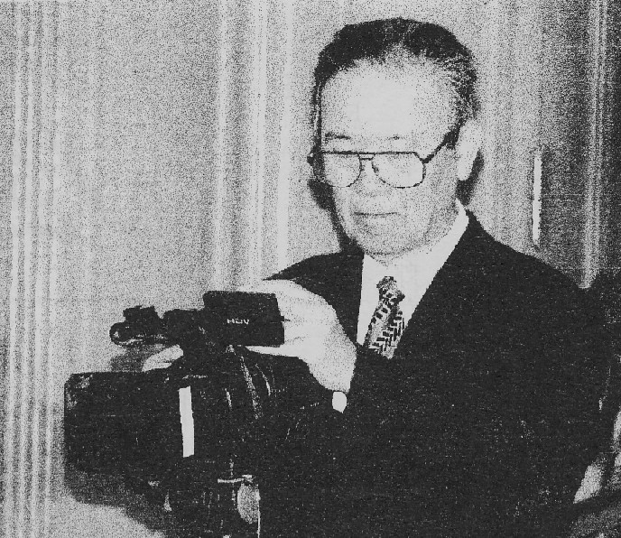澤田良平さん
購入申し込み先 同盟呉支部 二階堂洋史 一部 1,000円
電話 0823-22-1670 FAX 0823-22-1678
黒鳥山から北京まで
～反戦兵士
阪口喜一郎たちが残したもの～
澤田 良平
２００７年１１月、１台の広島ナンバーのワゴン車が大阪府和泉市の黒鳥山公園に到着した。
その公園の一隅には阪口喜一郎を顕彰する天然石の記念碑が建立されていた。
「広島から阪口喜一郎のことでビデオ取材に来はるねん」と３０名近い方々が私たちを出迎えてくれた。
私たち阪ロ喜一郎映像取材班の初回訪問時の出来事である。
この時、私と同僚の林淳さん（元ＲＣＣ報道局ディレクター、現日本共産党府中町議）は
「すでに喜一郎没後から７５年。彼を知り、彼と関わった人たちも、若くても９０才を越えている。
はたして、必要な画像が撮れるのだろうか」との不安を覚えていた。
だが、カメラが廻り、インタビューのマイクが向けられるとその不安は完全に吹き飛んだ。
叔父・喜一郎について、記憶の糸をＴ不ずつ解すように話し始めた甥の阪口義喜さんはすでに９０才を越えている。
「優しい叔父さんでした」と切り出した義喜さん。
いつも村人の人気を集めていた喜一郎の人柄や『聳ゆるマスト』発刊が官憲の知るところとなり、
ある日、突然、特高警察が自宅に土足で上がり込み、家の中をひっくり返して捜索された日のことを、悲しみと怒りを込めて話してくれた。
喜一郎が学んだ芦辺尋常高等小学校同級生の高田春次さん（級長）（副級長は喜一郎）は、晩年、教職を退いたあとも阪口喜一郎の顕彰碑建設に奔走したという。
作家・山岸一章の本には決して出てこなかったであろう。
頑固おやじの一途な生き方を語った息子・高田俊さんの話も”掘り出しもの〃だった。
「ここで挫けたら写真で見た阪口さんに顔向けができない」若くして紡績工場の組合長となり、労働争議をたたかい抜き、
喜一郎のだたかいを「自らの生き方」として貫き通した近江八千代さんの”熱き思い〃には圧倒された。
顕彰碑建設委員会の元泉北教組副委員長の辻田政信さん（８９才）は、機関誌『聳ゆるマスト』の現物を探し出すため、モスクワの旧ソビエト共産党の資料館まで調査したが、ついに、それを発見出来なかったとのエピソードも語られた。
また、喜一郎が呉軍港から大阪に帰省した際に恩師の松下先生（女性）に『聳ゆるマスト』を手渡したが、
松下先生の自宅が火事で焼失し『聳ゆるマスト』も燃えてしまったという残念な事実もこの取材で明らかになった。
あれから７５年、喜一郎が生まれ、そして、葬られた和泉市黒鳥町（旧大阪府泉北郡黒鳥村）には陸上自衛隊信太山駐屯地かある。
そして、そのすぐ南側に位置する黒鳥山公園には、３つの戦争モニュメント（明治天皇駐暉碑・陸軍戦役者忠霊碑・反戦兵士阪口喜一郎顕彰碑）が現存する。
これらのモニュメントを巡りながら、市内の小学生たちに［戦争と平和の問題を考えてもらっている」と話す森下徹さん（和泉市教育委員会市史編さん室勤務）は「この町の郷土史には反戦兵士・阪口喜一郎を称える記述があります。
喜一郎の母校である芦辺小学校（旧芦辺尋常高等小学校）では、児童たちが彼らの先輩である阪口喜一郎を”身近でとても勇気のある人”として尊敬しています。」と紹介してくれた。
帰路の車中、取材班ディレクターの”リンちゃん〃が「”サワ坊”（ＲＣＣでの澤田の愛称。林淳は”ジンちゃん”）、やっぱり現地に来んとこんなスゴイ絵（画像）は撮れんよのー』とご満悦の様子だった。
（次号につづく） 不屈（広島県版No.187) 2009.5.15.
黒鳥山から北京まで NO.2
～反戦兵士
阪口喜一郎たちが残したもの～
澤田 良平
「ＴＶ取材には金がかかる。金をケチる番組にロクなものはない。」
これは制作者の間でよく言われることだ。良い番組を作るには、それなりの費用が掛かるのである。
しかし、私たち『阪口喜一郎映像取材班』にとっては、先ず、第一にそのことを心配しなくてはならない。
何しろ、この作品を担当する制作者集団はすべてボランティア。人件費はゼロだが交通費は掛かる。
大阪府下の取材ともなるとマイカーで行くか、かなりの取材機材を抱えて新幹線・東海道線・阪和線を乗り継いで行くしかない。
当然だが『日当』も出ない。宿も”超リーズナブル”なホテル。当然インターネットで検索する事となる。
地理にうとい二階堂洋史さん（日本共産党中部地区委員長）が探してくれたお宿は、
釜ケ崎（大阪市西区）のドヤ街であったり、ラブホテルが林立する北区兎我野町にある、古くて汚れたホテルであったりする。
「船頭多くして船山に登る」との諺がある。
この企画が具体化するまでには、阪口喜一郎にかかわるゆかりの人を探す苦労も天変だった。
また”ゆかり〃はないのに持論にこだわり、うるさく口を出す人や、完成した作品に使用された資料映像について「あれは１０フィート運動に出てきた映像で出典が間違っている」とクレームを付けた老人がいた。
呉湾では米空軍の空爆で撃沈・着座した旧日本海軍の艦船が多数あった。
それを撮影したカラー１６ｍｍ映像は米国ワシントンのアメリカ国立公文書館から入手したものであり、
連合軍最高司令部（ＧＨＱ）通信隊が１９４６年４月に撮影したものである。
また、ある人物は、私たちに無断でＤＶＤを自らのホームページで公開すると言い出し、
また、現在、新聞に連載中の小説『聳ゆるマスト』（作・小栗勉氏）を無断でホームページに転載するなど、
著作権はもちろん社会的マナーすら守れないそれら非常識な行為は糾弾されて当然である。
彼らは、自らの顕示欲だけに駆られ、阪口喜一郎のほとばしるような「正義感」とその苦難に満ちた生涯を理解しない無責任な人たちである。
ＤＶＤ作品『聳ゆるマスト』の制作が終盤を迎えつつあったある日、大阪からの電話でビッグニュースが飛び込んできた。
「阪口喜一郎自筆のサイン入りポートレートが出て来た」と言うのである。
私たち取材団が一番困っていたことは、彼が書いた手紙や、身に付けていたものなど、喜一郎を物語る品々であった。
しかし、没後７５年の歳月は、それを残すことを許さなかった。
だからこのニュースはまさに晴天の霹靂であった。
一時でも速くどのような写真かが知りたくて、早速メールで送って戴くよう依頼した。
暫くして、プリンターから出て来た写真は、海軍士官の制服を身にまとった”ハンサムボーイ”の阪口喜一郎の姿であった。
写真には(K.Sakaguchi 1930‐5)と力強い筆跡のサインが躍る。
彼の胸に輝くボタンには錨のマークがはっきりと読み取れる。（編集者註・「不屈」県版１月号に写真掲載）
ふるさとの大阪府泉北郡黒鳥村（現大阪府和泉市黒鳥町）では、平和を愛する、心優しい喜一郎ゆかりの人々の手で、
大切に守られ、私たちの取材が取り持つ縁で、没後７５年目に蘇ったのである。
「調査や取材は現場が一番」と言われる。
このビッグニュースも和泉市での調査・取材活動を通じて培われた人々との絆のおかげである。
では、作家・山岸一章は彼の作品『聳ゆるマスト』でどのような調査と取材をしたのだろうか？
彼の作品では、阪口喜一郎は”非国民”とされ、人々は彼のことを語らなかったとでも言うのだろうか。
だが、私たちの取材では、黒島村の人々は、彼をそのように呼んだことはまったくなかった。
甥の阪口義喜さんの『証言』は、そのことを自らの思い出としてはっきりと話してくれた。
だからこそ、彼のふるさとにはそのポートレートが保管され、四季折々に市民が憩う黒鳥山公園には、
反戦・平和を貫いた兵士阪口喜一郎の『顕彰碑』が建立される歴史的背景があったのである。
（次号につづく） 不屈（広島県版No.188) 2009.6.15.
黒鳥山から北京まで No.３
～反戦兵士
阪口喜一郎たちが残しかもの～
澤田 良平
戦前の日本は、絶対主義的天皇制のもと野蛮な軍国主義の圧制と秘密警察（特高）が国民すべてをその監視下に置き、
人々の生活の隅々にまで厳しい監視と弾圧が横行する時代であった。
そんな時代でも、国民の多くは出征する夫々息子の生還を願い、平穏な生活が続くことを頻っていた。（決して人前では口に出さなかったが・・・）
貧しい家庭の出身であった水兵・阪口喜一郎が密かに『聳ゆるマスト』を発行し軍艦の水兵たちに届けていたのもこの時代であった。
それからおよそ８０年、当時、喜一郎がひそかに入党した日本共産党は、いま、党創立８７年を迎え日本の現実政治をはじめ、国民と深く結びついて日本の民主的発展と国際社会に影響力を持つ強く大きな党に成長した
その党は、いま、将来をになう若手の党活動家を養成する一環として「特別党学校」を開催している。
その講義録が２００６年―１月に発刊された『日本共産党史を語る（上・下２冊）』（不破哲三著／新日本出版社）である。
この『日本共産党史を語る』上巻８０頁には、以下の記述がなされている。
・・・ここに「日本人民の反戦闘争」という中国語の本をもっていますが、
これは中国抗日戦争史学会と中国人民抗日戦争記念館（北京市蘆溝橋）の共同編集で、
１９９５年に発行されたものです。
この本は、日本の国内における日本共産党を中心とする反戦闘争も、系統的に紹介していて、
先ず、第二両の「満州事変」前後の反戦闘争は「この闘争の先頭に立ったのは日本共産党だった」という文章からはじまり、
当時のアカハタの主張や呉軍港での『聳ゆるマスト』の活動などにまで触れています
第二編以下が『反戦同盟』や『日本人民解放連盟』の活動に充てられています。
この本が出たのは、まだ両党間の断絶状態が続いている時期でしたが、
その時に、戦争の時代における日本共産党の役割を、中国側かきちんと位置づけてこういう本を作った。
また、抗日戦争記念館がその編集の一翼を担っていたということは、なかなか感じとるところのある事実でした。
この記述が、私たちを中国北京への国際取材に向かわせる根拠となったのである。
日本人と日本共産党が、自らの同胞や党員をいかに客観的に評価したとしても、
外部から見れば自画自賛とも受取られかねない。
しかし、日中両党の関係が断絶状態にあっても、中国共産党が日本共産党員である阪口喜一郎の『生命を賭して繰り広げた国際的反戦活動』を正しく評価し、
中国の出版物にまでその闘いぶりを記録している。
私たち取材班は、阪口喜一郎の闘いが、海外でもこのように『客観的評価』を得ていることをこの作品に正しく反映させなければと考え、
迷わずに北京でのＴＶ取材を決定した。
ところで、取材先は中国政府の関係機関であり、担当者も相当の地位にある人たちである。
どのようにして取材対象者へのApointment（アポ・約束）を取り付けるか？
また、不破さんが訪館した当時の１９９５年と２００９年とでは、館内の展示も変わっている可能性がある。
はたして、いまでも阪口答一郎に関わる展示がけいぞくしているのか？・・・・
私たちの前には新たな難題が立ちはだかった。
取材班の友人である三戸真治さんは日中友好協会廣島県本部の事務局長である。
『被爆地ヒロシマ』という国際的役割もあり、北京にある中日友好協会本部の幹部とも親交が深い。
訪中時期は取材班の日程や同行する関係者の都合から２００９年３月下旬、ツアー名も『反戦兵士・阪口喜一郎の展示視察訪問団』と決められた。
さっそく、北京との折衝が開始され、日中間で何通かのFaｘがやりとりされた。
三戸さんの要請で東京の本部からも北京に手紙が出された。
そのころ、取材班の旅程管理を引き受けてくれた横井正員さん（富士ツーリスト）も折衝の渦に巻き込まれていた。
当初、私たちの知るところでは、阪口喜一郎に関する展示は中国革命軍事博物館（北京市）にあるということだった。
しかし、軍事博物館は中国国防部（国防省）の所管であり、国防秘密の観点から館内取材は『一切禁止』されているとのことであった。
そこで横井さんは、提携旅行社である南京中北友好旅行社に支援を要請し、
日本担当部長を北京に派遣させ、阪口喜一郎に関する展示物の行方を詳しく調査してもらっていた。
こうした陰の努力が実を結び『取材はＯＫ』との答えを受け取ったのは出発の数日前たった。
それによると、不破さんの本にあった中国人民抗日戦争記念館には阪口喜一郎の展示はない。
しかし、抗日戦争記念館の努力で、館の書庫にその出版物が保管されており、
取材には副館長が対応するという内容であった。
（次号につづく） 不屈（広島県版No.189) 2009.7.15.
～兵士が発行した
反戦平和の新聞～
（黒鳥山から北京まで No.4)
澤 田 良 平
２００９年３月２４日、広島空港国際線ロビーに１１名の顔がそろった。
メンバーは取材班プロヂューサーの秋田憲吾さん（元ＲＣＣテレビ制作部）、カメラマンの私をはじめ、『視察訪問団』団長の上田博則さん（治安維持法犠牲者国家賠償要求同盟広島県呉支部長／同慶島県本部副会長）、二階堂洋史さん（日本共産党広島県中部地区委員長）など男性７名・女性３名、そして添乗員として東京から参加した横井正員さん（富士ツーリスト）である。
取材班の秋田さんと私以外の８名は観光を兼ねた北京旅行だが、取材現場に同行いただけることになっている。
ご高齢の上田さんには車椅子が必要で、その介助に看護師の二階堂邦子さんが付いていただく。
我々を乗せた中国国際航空ＣＡ・３２１は一路西北西に進路をとる。
眼下には渤海が蒼く光る。突然それが途切れて赤茶けた陸地と滑走路が目に飛び込んできた。
大連周水子国際空港である。機内アナウンスによると入国審査は北京ではなくこの大迫で受けるという。
空港１階にある殺風景な入国ゲートでは、無愛想で”一言もしやべらぬ”入国管理官殿がパスポートにスタンプを押す。
ところで、欧米の国際空港では入国管現官が到着した旅客のパスポートを見て、その国の言葉か英語で「コンニチワ」『コンバンワ』と歓迎してくれるところが多い。
私の訪中は今回で３回目。儀礼を尊ぶ中国である。
無愛想な彼にも一言ぐらい”歓迎の挨拶”をしてもらわなければとブースの前でニッコリ。
日本語・中国語で「こんにちは」と話しかける。
彼も立ち去る気配がない日本人に気付いたのか、仕方なく苦笑しながら「Good afternoon」と応じてくれた。
私も"礼儀正しく「Thank you.Have a niceday.」と答礼し、ふたたび搭乗ゲートから同じ機の座席に戻る。
ここからＣＡ・３２１便は国内線扱い。北京に向かう人たちで満席となった。
最終目的地までは１時間あまり。
それにしても、私たちが乗った飛行機はお粗末な機体だ。
シートのクッションはへたっている。アームレストは壊れているし、トイレも薄汚れている。
もちろん機内テレビはない。
同席の親友Ｔさん（元中学校教員）とは海外旅行を楽しむ間柄。
その彼は「日本が良過ぎるんです」と一言。これも”お国の事情”と素直に納得した。
やがて、夕闇迫る大地に空港の明かりが見えてきた。
先のオリンピック開催に合わせ開港した北京首都国際空港である。
まさに中華人民共和国の威信を示す巨大近代建築だ。
以前の北京国際空港とは。月とスッポン〃の違い。
まるで”札束を積みあげて”作ったと言うのがビックリする空港である。
長い通路を歩き、ターンテーブル（手荷物引渡し場）のサインが見えた処で突然足止め。
我々の搭乗員もストップだ。搭乗員と空港職員との間でなにやらもめてい右らしい。
しかし、１０分以上も待たされている乗客には何の説明もない。
しびれを切らしその内の一人に「なぜ待だされるか」と聞いてみたが返事も返って来ない。
そのうち、女性の乗客がきれいな日本語で「職員が不慣れのため到着したＣＡ・３２１便の手荷物がどのターンテーブルに出るのか判らないのだって。
だからこの先に進めないのよ」と教えてくれた。
ここは中国である。「郷に入れば郷に従え」の諺に従うしかない。
幸いこのあとは夕食の北京料理を食べてホテルに入るだけなのだから・・・。
さて、それぞれもバッグを受け取り”無愛想’な北京税関もフリーパス。
やっとの思いで出迎えのマイクロバスに乗り込んだ。
空港玄関で私たちを待っていてくれたのは、北京ガイドの王旭さんと、
南京中北友好国際旅行社/日本担当部長の曹陽さんの二人であった。
とりわけ曹さんは、添乗した横井さんの依頼を受け、北京に残る阪口喜一郎に関する取材対象とその取材の可否を調べてくれていた。
後日、その曹さんから次のようなEメールが届いた。
・・・「反戦兵士・阪口喜一郎の展示視察訪問団」をご案内させて頂くことを心から感謝しております。
視察先への手配は予想以上に完成しました。
特に、取材を成功されたので、大いにＤＶＤの完成を期待しております。
私たちは「南京大虐殺」のあった中国南京の国際旅行社として、
ここ２０年余り「平和の旅」に努力してきました。
今回を含め、毎年いろいろと妙なご縁で「日中友好協会」（本部・名古屋・大阪・福岡・岡山・倉敷・・・）や
「新日本婦人の会」などをご案内させて頂いております。
これまで本当に日中友好に努力なさる多くの皆さまと親しい友人となり、日本の平和運動や民主運動、
日中友好運動の歴史と現況など、逆に多くを勉強させて頂き、理解を深まりました。
単なるビジネスではなく、草の根の友好・交流に微力ですが最大限の努力をしてまいりたいと思っています・・・。
（次号につづく） 不屈（広島県版No.190) 2009.8.15.
～兵士が発行した
反戦平和の新聞～
（黒鳥山から北京まで No.5)
澤 田 良 平
悠久の都・北京
翌２５日朝、バスはホテルを離れた。
ガイドの王さんの説明がなければ我々は北京のラッシュアワーを、無政府状態だと勘違いするところだった。
車間距離３０～５０センチは常識の範囲内。
『譲り合いの精神』などは通用しない国らしい。
数年前のイタリア旅行でも、その交通マナーには随分と肝を冷やしたが、ここ北京はその比ではなかった。
１０車線もある大街路に洪水のような車列がひしめく。
その間を自転車と歩行者が入り乱れる。そして、その喧噪の上に超高層ビルが林立する。
きょう最初の行程先は中国日本友好協会の表敬訪問である。
そこは、今までの喧噪がウソのような閑静な町並みの一隅にあった。
協会が入居する濃洒な建物は元イタリア大使館だと言う。
迎え入れられた建物はさすがにヨーロッパ建築。
天井は高く、２階の貴賓室に続く大理石の階段では冷えた身体が暖まる。
部屋に入ると白髪にメガネの柔和な紳士が私たちを出迎えてくれた。
その人が中国日本友好協会理事の劉子敬さんであった。
彼は若くして東京の和光大学に入学した知日派で流暢な日本語で歓待していただいた。
全員の自己紹介のあと、団長の上田博則さんが、今回の訪中団受け入れにご尽力いただいたことに感謝を述べ、広島から持参したお土産をお渡しする。
もちろん、日本語版『日本共産党史を語る』も大いに喜んでいただいた。
歴史は書き替えられない
続いて訪れた中国人民軍事博物館では、中国人民の解放闘争と日本軍による野蛮で卑劣な侵略行為が使用された武器等と共に展示されていた。
ところで、日本では南京での中国人への無差別な屠殺（家畜を殺すに等しい殺戮：南京事件）などの一連の出来事を『虚偽の出来事』と主張する人たちがいる。
元自衛隊航空幕僚長・田母神俊雄氏は、その論文で『大東亜戦争は侵略戦争ではなく、
中華民国やアメリカを操ったコミンテルンによる策謀が原因である』と言う。
当然のことながら、その論文の主旨が政府見解（村山談話、小泉談話）と異なる歴史認識とされ、
彼は浜田靖一防衛大臣から航空幕僚長の職を解かれて６０歳で自衛隊を定年退官する事態となった。
もし、彼がその持論に確信があるのなら、何故、南京市の『侵華日軍南京大屠殺遇難同胞記念館』や、
北京市の『中国人民軍事博物館』『中国人民抗日戦争記念館』などに出向き、日本人としてその展示について”勇気ある抗議〃を行わなかったのか・・・。
盧溝橋を渡る
盧溝橋は北泉市の南西部（北京市豊台区）を流れる永定河に架かる。
古くは南方から北京に入る交通の要所だった。
全長２６６．５ｍ、幅７．５ｍ、１１桁のアーチ橋で欄干には５０１体の獅子が並びその規模の壮大さに感服する。
路盤に刻まれた荷車のわだちの跡を見ながら橋を東に渡ると城門が行く手に聳え立つ。
今回の取材目的である中国人民抗日戦争記念館はその城内にあった。
白亜の殿堂と呼ぶにふさわしいその記念館は２００６年に建替えられたと言う。
事前の連絡で日本語の出来る学芸員が取材班と同行者を案内してくれる。
館内撮影のため取材カメラをDolly（ドリー‥移動用台車）に載せる。
広い館内をＰＤ（プロデューサー）の秋田憲吾さんと"右に左に”"行きつ戻りつ"カメラを廻す。
約１時間余りの取材を終えたのち、私たちは豪華な貴賓室に招き入れられた。
出迎えていただいたのは李宗遠副館長だった。
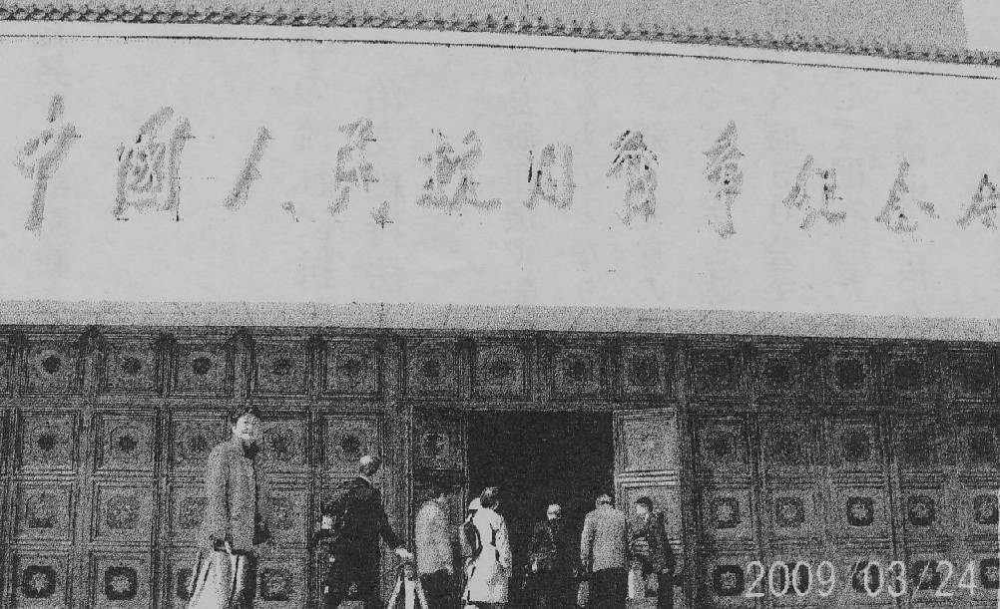
中国人民抗日戦争記念館
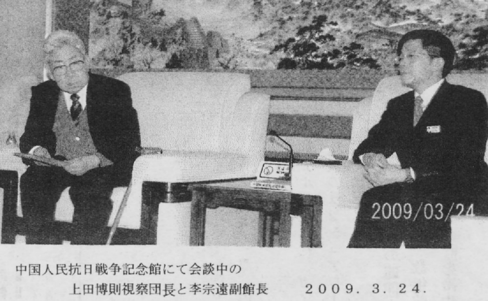
交流会見
早速に自己紹介とお土産の交換があり、秋田憲吾ＰＤから今回の取材目的をお伝えする。
やがて、カメラが回り始める。李宗連副館長のゆっくり落ち着いてよく通る声が室内に響く。
記念館の開設意義や、２１世紀を迎え中日両国の平和・友好の礎になることを希望すると話された。
しかし、残念ながら取材目的の阪口喜一郎ら日本国内における反戦闘争に関する展示物は見当たらなかった。
しかし、李宗遠副館長は１冊の書籍を広げて文面の説明を始めた。
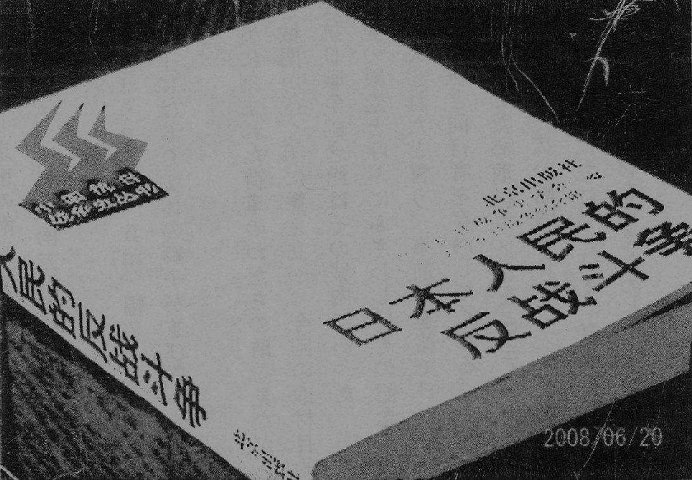
「日本人民的反戦闘争」
それは『日本人民的反戦闘争』（１９５０年北京出版社発行）に記載されたものであった。
（次号につづく） 不屈（広島県版No.191) 2009.9.15.
ＤＶＤ『聳ゆるマスト』制作の記
～兵士が発行した 反戦平和の新聞～
（黒鳥山から北京まで NO.６）
澤田 良平
日本人民的反戦闘争
「これは当館の書籍庫にあったものですが、この中に次のような記述がありす。・・・
１９３２年２月、日本共産党呉港地区委員会軍事部の阪口喜一郎が責任者となり
水兵向け新聞〈聳立的杆＝聳えるマスト〉を発行しました。
〈聳えるマスト〉と〈赤旗報〉は１９３２年１０月に６号まで発行され散発的に現役水兵の手に届けられました。
また、それと前後して呉港海軍工廠の共産党組織は〈轟鴫的吊車＝唸るクレーン〉を発行しました・・」と。
インタビューの後でカメラ撮りしたそのページには、当時の呉における日本共産党と
勇気ある労働者たちの闘いが詳しく記載されていた。
私たちは日中両党関係が断絶状態にあっても、この歴史的事実を客観的に記述した
当時の編集者たちに心からの拍手を送りたいと思った。
対応していただいた副館長の李宗遠さんは私だちとの懇談で、
彼が「日中韓３国共通教材委員会」の中国側の一員であり、日中韓共同編集で出版された歴史書
「未来をひらく歴史」を完成させたメンバーの一人であることを明らかにした。
それは日本の歴史教科書が’国際的に大問題となったのを受けて、２００２年３月、
南京で開催された日中韓国３国の研究者による［歴史認識と東アジアの平和フォーラム」において
共通の歴史教材を作ることが合意されたことに始まっている。
同行した高橋信雄さん（元全教広島委員長一歴史教育者協議会副委員長）はその問題で広く活躍している。
偶然とは言え、教育者同士の会話が弾んだことも記憶に残ることとなった。
北京でも、私たちは国境を越えた新たな出会いに恵まれた。
そして喜一郎が『聳ゆるマスト』にこめた反戦・平和の願いは、今、
確かな国際連帯のうねりとなって確実に発展していることを実感した。
御調から津和野ヘ
北京から帰った私たちには新たな取材先が待っていた。
妻として喜一郎を支え、戦後も広島の婦人運動の発展に努力した野村梅子が
その生涯を閉じた御調町（旧広島県御調郡／現在は尾道市）である。
「ここには生前の野村梅子の肉声を音声テープに記録した日本共産党御調支部の原田さん夫妻が活躍している。
また、津和野町（旧島根県鹿足郡木部村）には喜一郎逮捕の後『聳ゆるマスト』の２代目編集長であった木村荘重、３代目編集長の平原甚松がその生涯を閉じたところである。
では、なぜ『聳ゆるマスト』に関わった３人が、戦後の混乱期を戦い続けたのか・・・
詳しい内容はＤＶＤドキュメント『聳ゆるマスト～反戦兵士・阪口喜一郎が残したもの～（仮称）』をご覧いただくことにしよう。
そして、私たちには東京都内や呉市での取材と編集作業が待ち受けている。
なお、２版目のＤＶＤ『聳ゆるマスト』は２００９年１２月下旬大阪府和泉市黒鳥山公園で開催される阪口喜一郎没後７６年記念の碑前祭で公開される予定である。
（完）
筆者略歴
ＨＶＣ広島映像通信代表（プロデューサー）
１９３８年 大阪市出身 立命他大学工学部電気工学科卒
１９６１年 ＲＣＣ中国放送（広島市）入社 テレビ技術部に配属
１９９８年 同社を定年退職 元広島大学総合科学部講師
広島・市民オンブズマン会議代表幹事
ＪＣＪ日本ジャーナリスト会議広島支部
広島市東区・早稲田学区社会福祉協議会副会長
Norway王国（核兵器ノー） 賛助会員
不屈（広島県版No.194) 2009.12.15. より転載
 阪口喜一郎顕彰碑建設実行委員会訪中団
阪口喜一郎顕彰碑建設実行委員会訪中団
２００９年４月５日
『聳ゆるマスト』
反戦兵士 阪口喜一郎らが残したものの
北京取材・報告
秋 田 憲 吾
１．上田博則団長以下１０名の標記北京取材と日中友好を主目的とした「中国訪問団」は、３月２３日（月）～２６日（木）の日程で北京を訪問し、無事所期の目的を達成して帰国した。
特に、中国人民抗日戦争記念館の取材に当たってば、李副館長らが誠実かつ鄭重に応対された。
副館長は、「日本人民の反戦闘争」という本（中国抗日戦争史学会と中国人民抗日戦争記念館が共同編集）を持参し、予定時間を超えてインタービューに応じられたほか、
閉館後も「訪問団」の注文に応じて記念撮影に加わり、その後学芸員、通訳を従え入場門まで見送ってもくださった。
そして懇談の中では、これを機に「聳ゆるマスト」に関する資料の収集に努める旨の発言をされていた。
また、中国人民革命博物館では、ビデオ撮影もでき、当初の予定より内容のある取材ができた。
２．具体的な取材行程
３月２３日（月）１２時３０分発・中国国際航空１５４便で、広島空港を出発した訪問団の１０名は、大連経由で北京入りした。
薄曇りの空の下、でんと横たわる北京空港に一行が到着したのは、現地時間１８時前。
時差１時間といはいえ、広島の同時刻より明るいな、しかし空はどんよりしているというのが北京の第一印象である。
翌２４日は、訪問団の主目的・中日友好協会表敬訪問と中国人民革命軍事博物館見学および中国人民抗日戦争記念館取材の日である。
朝、ホテル・ロビーで一行を待ち受ける添乗員の横井氏（富士ツーリスト）を始め、現地通訳曹氏とガイドの王氏も、心なしか緊張気味。
中国共産党本部に隣接する区画にある中日友好協会への表敬訪問では、劉理事と勤めて４年目の通訳の方が、応対された。
会場は、築およそ１００年という旧イタリア大使館で非常に落ち着いた趣のある建物だった。
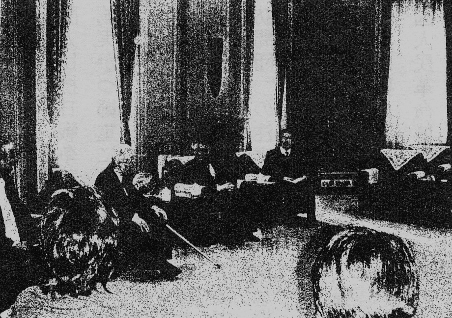
中日友好協会にて
はじめに上田団長があいさつに立ち、呉の海上自衛隊が果たしてきている具体的な役割や動きを押さえて、
反動化を強める呉市の現状とわたしたちのたたかいを述べ、訪問の趣旨を伝えた。
これに対し、劉理事は流暢な日本語で日中友好協会との関係改善交渉にあたった当時の思い出話を、にこやかに話された。
天安門から約３．５ｋｍ西に位置する中国人民革命軍事博物館は、さすが人民解放軍の管理下にある施設だけに、手続・警備とも厳重であり、建物も”威風堂々”としたものだった。
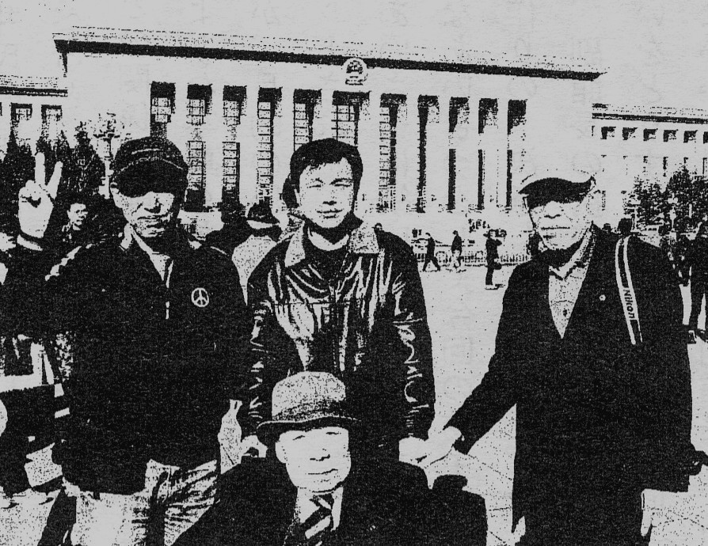
中国人民革命軍事博物館にて
天井の高いＩ階・ロビー正面には、どでかい毛沢東の彫像が立っていて、来館者の中には直立不動で手を合わせる人が見受けられた。
わたしたちは時間の都合で、２階の抗日戦争関係の展示だけの見学・取材となった。
ところで、館内は確か５階まで、各階ごとに人民解放軍の誕生から歴史的戦いの記録や装備品などが展示されていて、
最後は”近代装備の現状と今後”といった区分の展示内容になっていた
ここでの取材は、当初「軍の壁が厚く、写真やビデオカメラでの撮影は無理では・・」との情報だった。
しかし、現場で交渉する過程で写真、ビデオともＯＫ七判明。南京虐殺関係の展示物を中心に、かなりの時間をかけて撮影することができた。
今回訪中の第一目的である”中国人民抗日戦争記念館取材”を前に、蘆溝橋を訪ねた。
ここは、日本帝国主義が中国に対する全面侵略戦争を開始したいわゆる”蘆溝橋事件”の現場である。
この橋の南端を真っ直ぐ南に１００ｍほどたどり、城門を二つ三つくぐると、屋台が連なる鄙びた感じの、それでいて庶民の活気を感じさせる市場に出会う。
そこをさらに南下すると程なく左手に、門番が立つ「中国人民抗日戦争記念館」の入場門が目に入る。
通訳の曹氏が、来訪の趣旨を門番（ガードマン）に伝え案内を請うと、間もなく館内に招じ入れられた。
「副館長は執務中なので、先に館内の見学と取材を・・・」ということで、わたしたちは、それに従った。
学芸員の日本語による案内で、館内を見学する上田団長以下のメンバーとは別に、我々取材班は、日本軍の侵略行為に開わる写真や展示物を中心にカメラに収めて回った。
添乗員の横井氏の話では、「わたしは何回か訪ねているが、以前に比べると”どぎつい写真”などが少なくなっている。
日本との関係を配慮しての展示替えだと思う」「以前は目を覆うような写真もあった」とのこと。
我々取材班が、目的の展示物を収録し終えた頃、副館長との会見がセットされた。
上田団長のあいさつに続いて、取材班を代表してわたしが別紙のようなあいさつをして今回の訪中取材に込めた”想い”と作品作りの”決意”を表明した。
取材の途中、副館長の携帯電話が鳴った。後から考えると「閉館の扱いをどうするか」係からの問い合わせの電話だったのではないかと思われる。
副館長は、何事もなかったかのように、その後も我々の要請に応えてくれた。
そしてインタービューを終えたあと、握手を求めてこられ「ぜひまた訪ねてください。待っています。」と固く手を握られた。
また、編集研究部主任の夕氏は、わたしの手を握りしめたまま「今度こられたときは、１時間かけて話し合いましょう。
もう一度こられるのを待っています。」と労ってくれた。熱いものが伝わってくるのを覚えた。
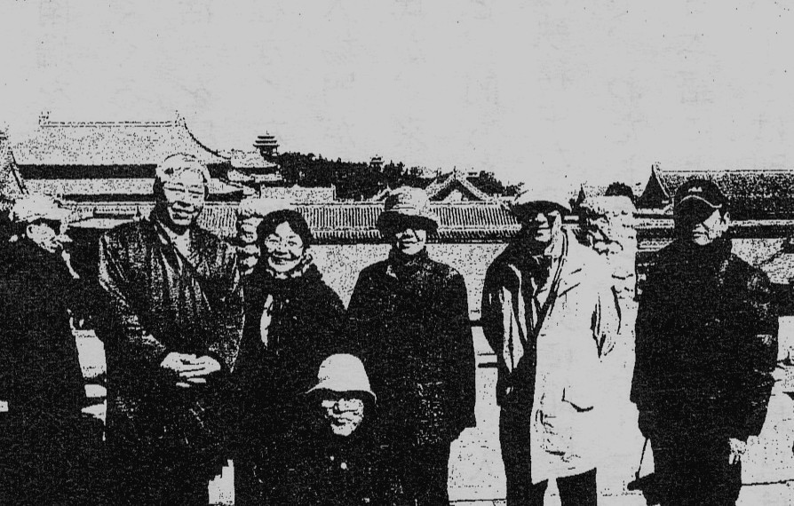
北京にて
２００９年３月２４日 北京抗日記念館での挨拶
反戦兵士の闘いを鑑とし
世界平和への道標を打ち起てる
日本代表団 上田 博則
今回の「反戦兵士・阪口喜一郎の展示視察訪問団」の中国視察訪問にあたって、いろいろご協力いただき、誠にありがとうございます。
私は日中国交回復の１９７２年以前１９６６年当時、日中友好協会広島県連合会の役員をしておりました。
その後出身地の呉市で日本共産党員市議会議員に、１９７９年に当選。
以来呉市議会議員として、また、日中友好協会呉支部の会員として３０年間微力ながら活動して来ました。
さて、憲法改悪・侵略戦争美化の策謀が強まるなか、航空自衛隊トップの田母神前が幕僚長が
「朝鮮や中国などの了承を得ないで一方的に軍を進めたことはない」「侵略国家だったというのは濡れ衣である」との論文を発表。
その前には、空自幹部学校機関誌に「南京大虐殺はなかった」と公表し、解任される事件など重大な出来事が続発しています。
このような中にあって、私の出身地呉市の海上自衛隊員基地は、発足以来、旧軍事施設を使用して総監部と艦船基地を置き、基地機能は年々強化されています。
艦艇配備状況を見ると、隻数、トン数とも横須賀・佐世保・舞鶴を抜いて日本一です。とりわけ、海外派兵基地ヘと強化されている点に特徴があります。
イ、第一輸送隊の新設
９８年３月６日、２隻のエアクッション型強襲上陸艇（ＬＣＡＣ）とその母艦「おおすみ」が配備され、
２００２年３月、２番艦「しもきた」、０３年２月２６日、３番艦「くにさき」配備で、第一輸送隊となりました。
ロ 海上自衛隊随一の潜水艦基地
自衛隊には、呉基地の９隻の第一潜水隊群と、横須賀の７隻の第二潜水隊群で構成されている潜水艦隊かおります。
０３年には海上自衛隊に２隻だけの音響測定艦（潜水艦の音紋情報を収集する艦船）を呉基地に配備しました。
ハ 掃海部隊の強化
アメリカが海自に最も期待しているものの一つは、機雷の掃海作戦です。
米軍が太平洋に配備している掃海艇は、わずか佐世保基地の２隻だけです。
海自は３１隻を保有し、能力も抜群です。
ニ 幹部侯拙生学校、第一術科学校など海自教育の中枢、江田島の旧海軍兵学校は、戦後・初級幹部教育の中心になっています。
大和ミュージアムが２００５年、９５億円かけて４月開館、３年経った時点で入館者総数は３百万人を突破しました。
この盛況に目をつけ、その北側に退役潜水艦を陸揚げし呉史料館、通称「鉄のくじら館」をオープンし、
３年の間に２つの「軍事博物館」ができ、軍国主義イデオロギーをあふっています。
今から７８年前の１９３２年２月から１０月にかけて、絶対主義的天皇制と軍国主義に立ち向かうため、
海軍内で６号まで発行された「聳ゆるマスト」と、その中心でたたかった呉海兵団下士官・阪口喜一郎の闘いを誇りとし、
その勇気を今に受け継いで奮闘する決意を固めています。
そのため、阪口喜一郎がたたかったこの呉市に、反戦・平和のだたかいを称えるモニュメントと史料館の建設をの声が高まり、
一昨年６月、日本共産党広島県委員会中部地区委員会では、呉市内の適地に「聳ゆるマスト」のだたかいを顕彰する記念碑を建設することを確認し、
その運動にとりくんでいます。多くの方々のご支援・ご協力を訴えています。
さて、この度は抗日記念館を訪問し「聳ゆるマスト」に関連した展示物および文献資料などの見学と、
ＶＴＲ作成のための協力申し入れを行い、実現できることになったことを大変うれしく思っています。
つきましては、その実現のために尽力を頂いた中日友好協会の関係者のみなさんに心からお礼を述べます。
「不屈」広島県中部版に掲載された記事の紹介
北京の「抗日記念館」を、日中友好協会広島県本部の三戸真治・事務局長の案内で、上田博則さんを団長に、十名のツアー・取材チームで、三月二十四日に訪問。上田博則さんの挨拶を紹介します。
抗日記念館も発行に関わった「日本人民の反戦闘争」の本に「聳ゆるマスト」の闘いが中国語で記述されていて、感動的な調査、取材となりました。
今回の「反戦兵士・阪口喜一郎の展示視察団」の訪問にあたってのご協力ありがとうございます。
私は、日中国交回復の一九七二年以前の一九六六年当時、日中友好協会広島県連合会の役員をしていました。その後、出身地の呉市で市議会議員をしてきました。
今、日本では憲法改悪・侵略戦争美化の策謀が強まる中で、航空自衛隊トップの田母神幕僚長が、
「朝鮮や中国などの了承を得ずに一方的に軍を進めたことはない」、「侵略国家だったというのは濡れ衣である」と論文を発表。
自衛隊幹部学校機関紙に「南京虐殺はなかった」と、公表し解任されました。
呉市の海上自衛隊基地は、発足以来、年々強化され、艦艇配備では日本一です。・・略。
「大和ミュージアム」が、二○○五年に九十五億円をかけて開館。三年で入館者は三百万人をこえました。
その北側には、退役潜水艦を据えて「鉄のくじら館」として開設です。今度は、ソマリア沖への自衛艦二隻の出港です。
今から七八年前の一九三二年に、当時の絶対主義的天皇制と軍国主義に立ち向かうために、海軍内で機関紙「聳ゆるマスト」を発行してたたかった伝統を受け継ぎ、私達は平和のために頑張る決意です。
この度の調査でのご協力に、心からの感謝とお礼を申し述べます。
北京・抗日記念館ホームページから 2009年4月2日
《本文は中国語。よく訳読できないが、大意は？》
3月24日，日本中国友好協会広島県連合会（反戦兵士・阪口喜一郎の展示を視察する訪問団）一行10人が中国人民抗日戦争紀念館を参観に来られ、李宗遠副館長が暖かくもてなしました。
参観終了後、日中双方が座談会を開きました。
李宗遠副館長が代表団の参加者に抗戦館の概況と展示内容を簡単に紹介しました。
日本代表は、この度の訪中の友好目的や希望、ならびに日中両国民の友好交流の促進を詳しく説明した。
同時に、訪問団は当館と中国人民抗日戦争史学会が共編した《日本人民的反戦斗争》に熱い関心を示し、その問題で李宗遠副館長と交流を深めた。
李宗遠副館長は以下のことを表明した。即ち、
抗戦館の展示の大きな主題は中日の友好発展を深めることに力点を置いていること、
展覧内容は研究の成果を深く取り入れながら少しずつ調整しており、歴史的な難しい問題も歴史問題を判りやすく説明しようとしていること、
両国の学者や民間人がいつも頻繁に交流し、協力していくことが必要であること、
さしあたり、中日両国民が歴史認識で差異があるのをハッキリさせて我々がこの問題の解決に努力せねばならないこと、である。
～中国人民抗日戦争記念館への
訪問・取材に際しての。あいさつ”～
２００９・３・２４ 秋田 憲吾
きょうはこのような席を設けていただき、誠にありがとうございます。心より感謝申し上げます。
「訪問団」のドキュメンタリー作品制作スタッフの責任者として、ご挨拶と決意表明をさせていただきます。
初めにお断りしておきますが、わたしかしゃべり出すと永くなる傾向かあります。
長いとはいっても、もちろん「万里の長城」ほど長くはありませんし、北京市の「第６環状線」ほどの長さでもありません。
しかし、「紫禁城」（故宮）の城壁くらいにはなることがあります。
そこで、長くならないように”あいさつ〃を文章にしてきました。これを読ませていただきます。
〈あいさつ文〉
”四つ葉のクローバー”は、幸運を呼ぶと云われます。
そして、日本人が奇数を好むのに対して、中国では、偶数が好まれると聞きました。
ここは、”漢字の国”中華人民共和国の首都―北京です。
そこで、私は”四つの熟語”、を使って、私たちの突然の訪問を、温かく迎えて下さった中国人民抗日戦争記念館の皆様へのご挨拶と致します。
”四つの熟語”には、いずれも”実”という宇が入っています。
日本では、この字を実（み）と読ませて、「果実」とか「中身、内容」を表す言葉として使います。
その”四つの熟語”とは、１現実、２真実、３誠実、４実現です。
それでは申し上げます。
「中華人民共和国と日本のさらなる友好と両国の発展のため、そして、”世界の平和”を願って・・・
わたしたちは、『現実』をしっかり見つめながら
『真実』を多くの人たちに
『誠実』に伝え、広めて
社会の変革を『実現』するよう奮闘します。」
きょうは、このような席を設けていただき、ありがとうございました。
私たちの滞在期間は短いですが、取材目的はもちろん発展著しい中国の現在の姿をしっかり見詰めさせていただき、
今回のドキュメンタリー作品に何らかの形で生かしたいと考えています。
どうぞよろしくお願い致します。
（不屈 広島県版 No418 2009年4月15日所載より抜粋）
編集部追記
ＤＶＤ『聳ゆるマスト』 一部 1,000円
申し込み先：治安維持法犠牲者国家賠償要求同盟・広島県呉支部
７３７-０８２３ 呉市海岸一丁目二の十六 気付け 上田博則
電話０８２３（２２）１６７０ fax ０８２３（２２）１６７８
寄稿
聳ゆるマスト （ミュージカル風に）
秋田憲吾
その昔
"平和"を訴えて
生命（いのち）を奪われた水兵さんがいました
それは
厳しい"弾圧の時代"のことでした
「戦争反対！」などと言えば
「非国民！」とののしられ
警察に連れて行かれる 時代でした
水兵さんは考えました
何とか念願（おもい）を伝えたい
「殺し合いは嫌だ！」とそび
仲間に訴えたい
「戦争の道具にはされたくない！」と
いっしょに考えたい と
そうだ！
新聞がいい！
仲間に手渡そう！
新聞の名は 「聳ゆるマスト」
艦船（ふね）の真ん中に位置して
空高く すっくと立ち
遥か遠く 大海原を見渡す
その姿は我らが誇り
戦争 それは殺し合い
それは避けられない掟です
あなたも
いつか
誰かを殺すでしょう
恋人も 母も 父もいる誰かを
妻も 子どももいる誰かを
無関心を装っても
この悲しみの連鎖からは
逃れられません！
戦争 それは殺し合い
それは避けられない掟です
あなたも
いつか
誰かに殺されましょう
ふるさと故郷に 母も父も残したまま
妻も子どもも残したまま
強がりを決め込んでも
この悲しみの連鎖からは
逃れられません！
それがあなたの希望ですか？
それがあなたの誇りですか？
水兵さんは訴えました
「生命（いのち）を粗末にしないでください！」
「生きて 生きて 生きて
新しい未来を切り開こう！」と
彼らは
希望を胸に
生命（いのち）燃やして
「聳ゆるマスト」を届けました
そんなに昔のことではありません
もちろん 物語ではないのです
Ⅱ、「不屈」広島県中部版 09年５月 NO-４
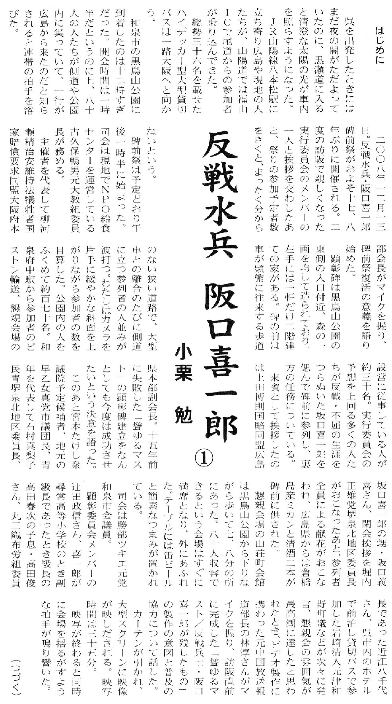
「反戦兵士 坂口喜一郎 ①」 小栗 勉（クリックで拡大します）
「呉戦災を記録する会」のホームページで、
紙芝居「反戦水兵と戦艦大和」。歴史教育者協議会会員、是恒高志さんの力作が掲載されています。
ＤＶＤ「阪口喜一郎」没後七十五年記念版・三十五分（普及千円、うち三百円は募金に）は、全国で五千本が活用されています。
同盟本部で上映され、各県の同盟関係者で、普及に努力されています。
喜一郎の故郷、和泉市の教育委員会の方も登場しての作品です。
注文は、各県同盟本部か、この「不屈」広島県中部版の発行先にお願いします。
すぐに郵送をいたします。
治安維持法犠牲者国家賠償要求同盟・広島県・呉支部
７３７-０８２３ 呉市海岸一丁目二の十六 気付け 上田博則
電話０８２３（２２）１６７０ fax ０８２３（２２）１６７８
Ⅲ、「不屈」広島県中部版 09年５月 NO-５
「聳ゆるマスト」発行・二代目責任者の平原甚松について
09年5月10日 二階堂洋史
1、平原甚松夫婦は、広島県大崎上島町（旧大崎町中野山尻）の出身。
（平原一族の菩提寺は、浄土真宗・西行寺）。島には、大崎火力発電所があり、対岸の契島（ちぎりじま）では、銅、亜鉛の精錬所が存在し、明治時代から立ち入り禁止で精錬が行われていた。
大崎上島には、その電力の供給で、日本では珍しく、島の中に、火力発電所が存在し、今も稼動しています。
２、1929年、隣接する竹原市の大久野島に、秘密裡に「陸軍工廠」が開設され、「毒ガス」兵器の製造が開始された。
製造された毒ガス兵器は、上海事件でも使用され、その後、第二次世界大戦にむけ、大規模に「毒ガス｣製造工場は拡張された。
中国戦線での使用、部隊配置で、大量の「毒ガス」兵器が中国にもちこまれ、又、戦後、廃棄された「毒ガス｣兵器は、今も、瀬戸内海の海底にあり、その被害が報告されている。
「毒ガス」兵器の原材料は、中国新聞社「毒ガスの島」取材班の分析では、「宮崎県土呂久（とろく）の鉱山と島根県津和野町では、『あか１号』、『きい１号』の原料となる亜砒酸が製造された」と、報道している。
3、戦後、平原夫婦は津和野町で過ごし、その墓は、津和野町木部保育所の前に建立されている。
平原甚松さんは、晩年、鎌倉時代からつづく津和野町笹ヶ谷鉱山の砒素鉱毒問題で、住民運動の先頭にたってたたかい、政府に大規模な鉱毒防止対策を要求。
環境庁は、1973年に亜砒酸の製造による環境汚染を認め、05年までに21人の患者認定をした。
鉱害防止対策は、73～83年度で18億円が投入され、堆積物の封鎖、堰堤の改修などおこなわれ、その後も、防止対策工事が進められている。
4、「毒ガス」兵器の製造は、当時最高の軍事機密で、大久野島は、戦前の日本地図には記載されない「島」でした。
平原夫婦は、晩年を過ごした津和野町で、故郷について「瀬戸内海のある島の出身」と、しか伝えなかったことや、
戦後、故郷の大崎上島に戻らず、平原一族の本平原家でも知る人がいないこと、津和野町財政課長を退職後、
「毒ガス」製造の原料となった旧笹ヶ谷鉱山の砒素鉱毒問題で、住民運動の先頭にたちました。
５、兵士に反戦・平和をよびかけた「聳ゆるマスト」の発行は、党が創立され10年後の1932年でした。
平原甚松夫婦の故郷の近くの島では、1929年に「毒ガス」兵器が製造を開始され、中国戦線に使われたこと。
その「毒ガス」の原料が、津和野町から持ち込まれていたこと。
平原甚松夫婦が、戦後生きた津和野町で、鉱害防止運動の先頭に立って、国の対策を実現させたことは、
「聳ゆるマスト」発行関係者の戦後の不屈のたたかいを感じさせるものです。
阪口喜一郎とともに帝国海軍の心臓部でたたかい、「聳ゆるマスト」発行の二代目の責任者となった平原甚松の生涯は、後世に伝えられるべきものだと思います。
ＤＶＤ「阪口喜一郎」没後七十五年記念版・三十五分（普及千円）は全国で五千本が活用されています。
同盟本部で上映され、各県の同盟関係者が、普及に努力されています。
喜一郎の故郷、和泉市の教育委員会の方も登場しての作品です。
注文は、各県同盟本部か、「不屈」広島県中部版の発行先に
治安維持法犠牲者国家賠償要求同盟・広島県・呉支部
７３７-０８２３ 呉市海岸一丁目二の十六 気付け 上田博則
電話０８２３（２２）１６７０ fax ０８２３（２２）１６７８
「呉戦災を記録する会」のホームページ(http://kure-sensai.net/)で、
《紙しばい》
「呉の歴史物語～戦争と闘った水兵たちと戦艦大和～」
歴史教育者協議会会員・是恒高志さんの力作が掲載されています。
Ⅳ、「不屈」広島県中部版 09年５月 NO-６
東広島市在住の現代詩人、秋田憲吾さんから次の詩が寄せられました。
阪口喜一郎にささげられた詩です。
作曲は、高田龍治さんにお願いをして今秋には完成し、喜一郎の碑前で披露される計画です。
聳(そび)ゆるマスト 秋田憲吾
その昔
"平和"を訴えて
生命（いのち）を奪われた水兵さんがいました
それは
厳しい"弾圧の時代"のことでした
「戦争反対！」などと言えば
「非国民！」とののしられ
警察に連れて行かれる 時代でした
水兵さんは考えました
何とか念願（おもい）を伝えたい
「殺し合いは嫌だ！」とそび
仲間に訴えたい
「戦争の道具にはされたくない！」と
いっしょに考えたい と
そうだ！
新聞がいい！
仲間に手渡そう！
新聞の名は 「聳ゆるマスト」
艦船（ふね）の真ん中に位置して
空高く すっくと立ち
遥か遠く 大海原を見渡す
その姿は我らが誇り
戦争 それは殺し合い
それは避けられない掟です
あなたも
いつか
誰かを殺すでしょう
恋人も 母も 父もいる誰かを
妻も 子どももいる誰かを
無関心を装っても
この悲しみの連鎖からは
逃れられません！
戦争 それは殺し合い
それは避けられない掟です
あなたも
いつか
誰かに殺されましょう
ふるさと故郷に 母も父も残したまま
妻も子どもも残したまま
強がりを決め込んでも
この悲しみの連鎖からは
逃れられません！
それがあなたの希望ですか？
それがあなたの誇りですか？
水兵さんは訴えました
「生命（いのち）を粗末にしないでください！」
「生きて 生きて 生きて
新しい未来を切り開こう！」と
彼らは
希望を胸に
生命（いのち）燃やして
「聳ゆるマスト」を届けました
そんなに昔のことではありません
もちろん 物語ではないのです
ＤＶＤ「阪口喜一郎」没後七十五年記念版・三十五分（普及千円）は全国で五千本が活用されています。
同盟本部で上映され、各県の同盟関係者が、普及に努力されています。
喜一郎の故郷、和泉市の教育委員会の方も登場しての作品です。
注文は、各県同盟本部か、「不屈」広島県中部版の発行先に。
治安維持法犠牲者国家賠償要求同盟・広島県・呉支部
７３７-０８２３ 呉市海岸一丁目二の十六 気付け 上田博則
電話０８２３（２２）１６７０ fax ０８２３（２２）１６７８
「呉戦災を記録する会」のホームページ(http://kure-sensai.net/)で
紙しばい
 「呉の歴史物語 ～ 戦争と闘った水兵たちと戦艦大和 ～」
「呉の歴史物語 ～ 戦争と闘った水兵たちと戦艦大和 ～」
歴史教育者協議会会員・是恒高志さんの力作を、自由に見ることができます。
戦前の反戦平和運動 1 へ
戦前2「戦争に反対して、命がけで活動した人たちの記録」へ
トップページに戻る